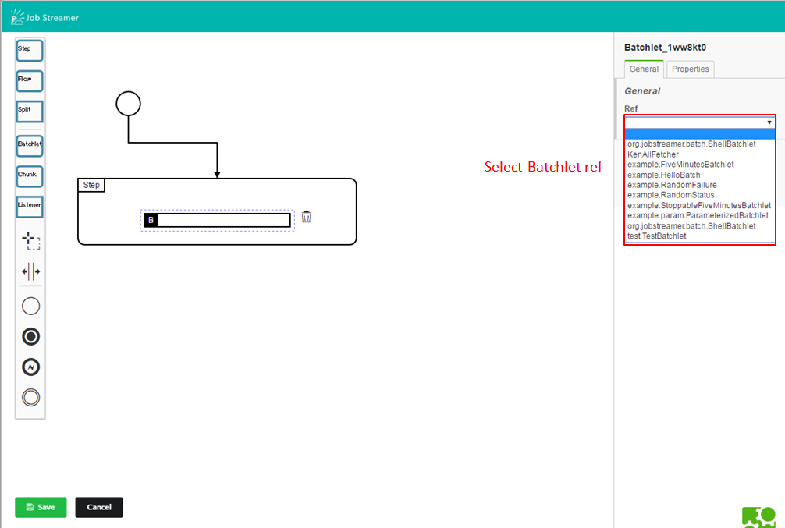
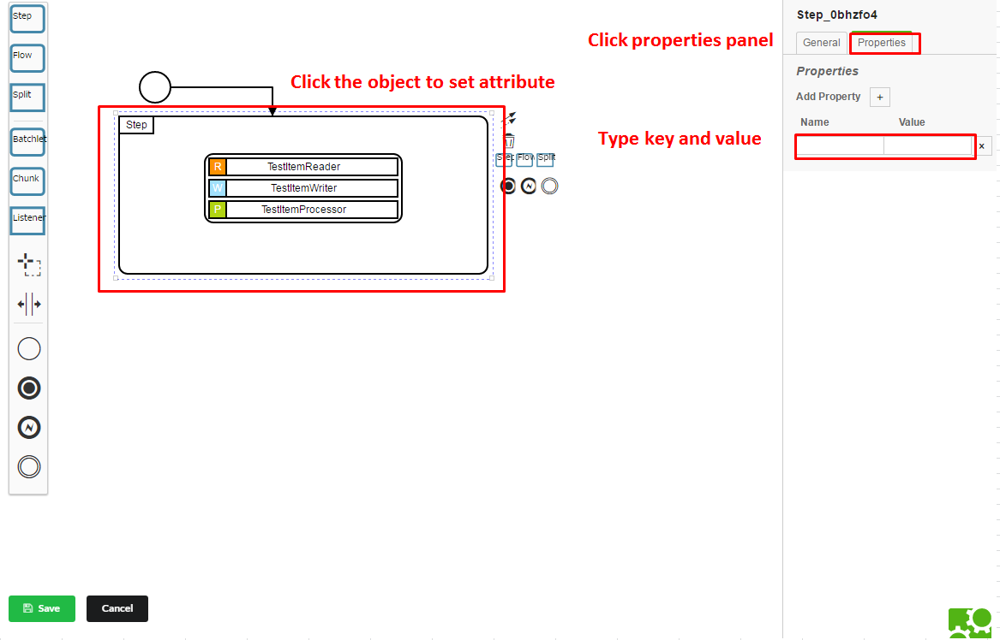

ジョブの作成
- トップページ(http://{サーバ機のIPアドレス}:{コンソールの立ち上げポート番号（デフォルトは8080)})にて“new”ボタンを押下

- ジョブを作成
Ex. Batchlet一つのStepだけを持つ簡単なjobを作成する


- Attributeの設定

- Propertyの設定

BatchletやItemReader/ItemWriter/ItemProcessorはコントロールバスにデプロイされているものだけが使用できます。
新しいバッチ部品を使用したい場合は ジョブ部品のデプロイを参照してください。